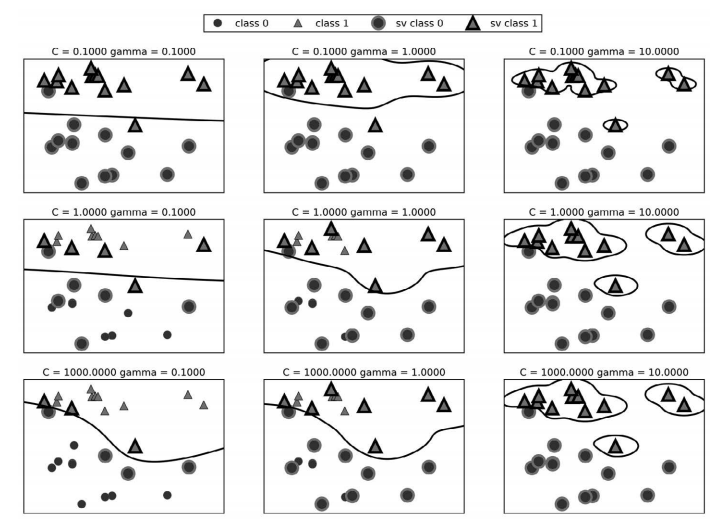

监督机器学习基本流程记录
特征工程
分类变量的编码方式
one-hot编码
一个特征的不同类别中，只有一个取1，其余取0
1 | from sklearn.preprocessing import OneHotEncoder # 使用OneHotEncoder进行变换 |
数字编码
一个特征的不同分类用不同的数字表示
特征分箱（离散化）
可以使线性模型在连续数据上更为强大，对每一段分别拟合，而不是对全体特征拟合（这样只会产生一条直线）。
1 | bins = np.linspace(-3, 3, 11) # 在-3到3的范围中创建十个箱子 |
交互特征与多项式特征
想要向分箱数据上的线性模型添加斜率，一种方法是重新加入原始特征。（会获得全局单一斜率）；另一种方式是添加交互特征或乘积特征，用来表示数据点所在的箱子以及数据点在 x 轴上的位置。这个特征是箱子指示符与原始特征的乘积（会获得每个箱子有不同的斜率）。
自动化特征选择
添加更多特征会使所有模型变得更加复杂，从而增大过拟合的可能性。在添加新特征或处理一般的高维数据集时，最好将特征的数量减少到只包含最有用的那些特征，并删除其余特征。这样会得到泛化能力更好、更简单的模型。
单变量统计
如果一个特征只有在与另一个特征合并时才具有信息量，那么这个特征将被舍弃。
1 | from sklearn.feature_selection import SelectPercentile |
基于模型的特征选择
基于模型的特征选择使用一个监督机器学习模型来判断每个特征的重要性，并且仅保留最重要的特征。
1 | from sklearn.feature_selection import SelectFromModel |
迭代特征选择
在迭代特征选择中，将会构建一系列模型，每个模型都使用不同数量的特征。其中一种特殊方法是递归特征消除（recursive feature elimination，RFE），它从所有特征开始构建模型，并根据模型舍弃最不重要的特征，然后使用除被舍弃特征之外的所有特征来构建一个新模型，如此继续，直到仅剩下预设数量的特征。
1 | from sklearn.feature_selection import RFE |
模型选择
K最近邻
适用于小型数据集，是很好的基准模型，很容易解释。
两个重要参数：邻居个数与数据点之间距离的度量方法
线性模型（包括线性支持向量机）
非常可靠的首选算法，适用于非常大的数据集，也适用于高维数据。
一个重要参数：正则化参数，在回归模型中叫alpha，在分类模型中叫做C。alpha越小或C越大则模型相对越复杂。
朴素贝叶斯
只适用于分类问题。比线性模型速度还快，但泛化能力相对较差，适用于非常大的数据集和高维数据。精度通常要低于线性模型。
一个重要参数：alpha。alpha越小则模型越复杂。
决策树
速度很快，不需要数据缩放，不能外推（预测未见过的数据），可以可视化，很容易解释。
一个重要参数：选择一种预剪枝策略（设置 max_depth、max_leaf_nodes 或 min_samples_leaf）防止过拟合。
预剪枝：通过限制树的最大深度或者叶结点的最大数目等来限制树的复杂度，从而提高泛化精度。
树的可视化
1 | from sklearn.tree import export_graphviz |
查看树的特征重要性（也可进行可视化查看）
1 | print("Feature importances:\n{}".format(tree.feature_importances_)) |
随机森林
几乎总是比单棵决策树的表现要好，鲁棒性很好，非常强大。不需要数据缩放，不适用于高维稀疏数据。
两个关键参数：n_estimators，即树的数量。max_features，即每棵树所随机采样的特征类型的最大数量，一般采用默认值。较小则每棵树的差异会很大，会产生深度较大的树；较大则每棵树都较为相似。以及可选的预剪枝参数。
梯度提升决策树
由深度很小的树组成，调参优秀的情况下精度通常比随机森林略高。与随机森林相比，训练速度更慢，但预测速度更快，需要的内存也更少，比随机森林需要更多的参数调节，且对参数敏感。
两个关键参数：n_estimators，即树的数量。learning_rate，即学习率，较高的学习率意味着每棵树可以对上一棵树的结果做出较强的修正，模型会更加复杂。以及可选的预剪枝参数。
核支持向量机
对于特征含义相似的中等大小的数据集很强大。需要数据缩放，对参数敏感。
两个关键参数：C和gamma，分别代表每个点的重要性和高斯核半径。两参数越大模型越复杂，且两参数强烈相关相关，应该同时调节。

SVM常用的数据预处理为将所有特征缩放到0和1之间，即使用MinMaxScaler()。
神经网络
可以构建非常复杂的模型，特别是对于大型数据集而言。对数据缩放敏感，对参数选取敏感。大型网络需要很长的训练时间。
两个重要参数：层数和每层的隐单元个数（使用列表指定），以及正则化参数alpha
估计神经网络的复杂度：依靠计算权重个数估计，权重数 = 特征数 * 第一层单元个数 + 第一层单元个数 * 第二层单元个数 ……
神经网络常将数据预处理为均值为 0、方差为1，即使用StandardScaler()
数据预处理
对于不平衡数据集的处理
尽量选择正例与反例样本数量基本相等
统计方法：
1 | print("Samples per class: {}".format(np.bincount(y))) |
StandardScaler
确保每个特征的平均值为 0、方差为 1，使所有特征都位于同一量级。但这种缩放不能保证特征任何特定的最大值和最小值。
RobustScaler
工作原理与StandardScaler 类似，确保每个特征的统计属性都位于同一范围。但RobustScaler 使用的是中位数和四分位数 1，而不是平均值和方差。这样 RobustScaler 会忽略与其他点有很大不同的数据点（比如测量误差）。
MinMaxScaler
移动数据，使所有特征都刚好位于 0 到 1 之间。
Normalizer
它对每个数据点进行缩放，使得特征向量的欧式长度等于 1。换句话说，它将一个数据点投射到半径为 1 的圆上（对于更高维度的情况，是球面）。
主成分分析（PCA）
主成分分析（principal component analysis，PCA）是一种旋转数据集的方法，旋转后的特征在统计上不相关。
一个主要参数：n_components，即最后保留的特征类别数量
非负矩阵分解（NMF）
非负矩阵分解（non-negative matrix factorization，NMF）是另一种无监督学习算法，其目的在于提取有用的特征。它的工作原理类似于 PCA，也可以用于降维。
模型评估
欠拟合
通常表现为训练集精度与测试集精度接近
过拟合
通常表现为训练集精度过分高于测试集精度
交叉验证
交叉验证（cross-validation）是一种评估泛化性能的统计学方法，它比单次划分训练集和测试集的方法更加稳定、全面。
一个重要参数：cv，即折数，或交叉验证分离器
1 | from sklearn.model_selection import cross_val_score |
由于数据集中的分类可能出现比较集中的情况，可以采用分层交叉验证、打乱划分交叉验证、分组交叉验证等方法，即通过构造交叉验证分类器来解决。
带交叉验证的参数网格搜索
1 | param_grid = {'C': [0.001, 0.01, 0.1, 1, 10, 100], |
混淆矩阵
对于二分类问题的评估结果，一种最全面的表示方法是使用混淆矩阵，混淆矩阵主对角线 上的元素对应于正确的分类，而其他元素则告诉我们一个类别中有多少样本被错误地划分到其他类别中。onfusion_matrix 的输出是一个 2×2 数组，其中行对应于真实的类别，列对应于预测的类别。
计算准确率与召回率的classification_report
我们可以使用 classification_report 函数来评估两个类别的准确率与召回率,准确率即预测成功率，召回率即预测正例占真正正例的比例，f1-score是准确率与召回率的平均。
1 | print(classification_report(y_test, svc.predict(X_test))) |
可以利用如下代码计算准确率-召回率曲线
1 | from sklearn.metrics import precision_recall_curve |
ROC曲线：反映假正例率和真正例率
1 | from sklearn.metrics import roc_curve |
选择参考指标的scoring
对于分类问题，scoring 参数最重要的取值包括：accuracy（默认值）、roc_auc（ROC 曲线下方的面积）、average_precision（准确率 - 召回率曲线下方的面积）、f1、f1_macro、f1_micro 和 f1_weighted（这四个是二分类的 f1- 分数以及各种加权变体）。对于回归问题，最常用的取值包括：r2（R2 分数）、mean_squared_error（均方误差）和 mean_absolute_error（平均绝对误差）。
管道
构建管道
1 | from sklearn.pipeline import make_pipeline |
在网格搜索中使用管道
1 | param_grid = {'svm__C': [0.001, 0.01, 0.1, 1, 10, 100], |
访问步骤属性
1 | components = pipe.named_steps["pca"].components_ |
基础自然语言处理知识
数据清洗
例子：去除文本中的<br />
1 | text_train = [doc.replace(b"<br />", b" ") for doc in text_train] |
计算词袋模型并转化数据
1 | from sklearn.feature_extraction.text import CountVectorizer |
n-gram
除一元分词外，其余可保存上下文信息，而不仅仅是单词信息。ngram_range 参数是一个元组，包含要考虑的词例序列的最小长度和最大长度。
1 | cv = CountVectorizer(ngram_range=(1, 1)).fit(bards_words) # 一元分词 |
停用词
1 | from sklearn.feature_extraction.text import ENGLISH_STOP_WORDS |
用词频 - 逆向文档频率缩放数据（tf-idf）
这一方法对在某个特定文档中经常出现的术语给予很高的权重，但对在语料库的许多文档中都经常出现的术语给予的权重却不高。
scikit-learn 在两个类中实现了 tf-idf 方法：TfidfTransformer 和TfidfVectorizer，前者接受 CountVectorizer 生成的稀疏矩阵并将其变换，后者接受文本数据并完成词袋特征提取与 tf-idf 变换。
1 | from sklearn.feature_extraction.text import TfidfVectorizer |
高级分词、词干提取与词形还原
主要是解决英文中同一个单词拥有不同词性、时态等情况时，将所有这些都归为同一个单词，这样可以减少过拟合的风险。
1 | import spacy |